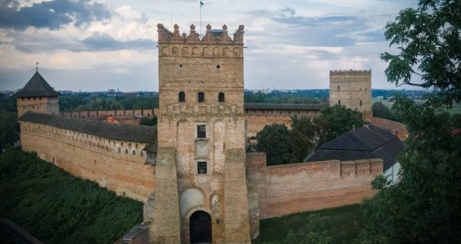
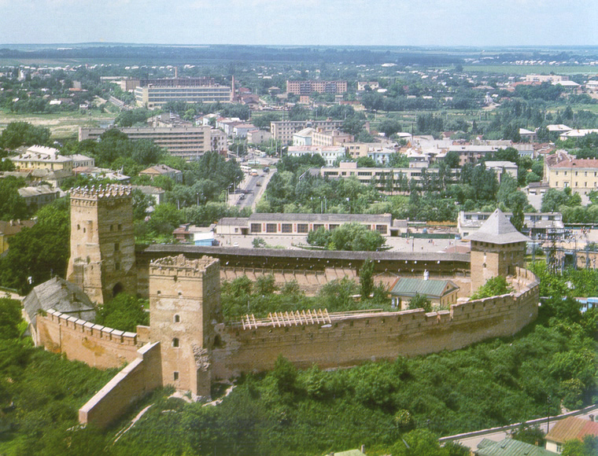

Оновлення Замку по смерті Любарта, який просто фізично не зміг завершити почате, продовжив Вітовт Кейстутович. На зламі ХIV–ХV ст. залишки дерев’яних укріплень луцького дитинця було замінено цегляними мурами.
Замок має три високі прямокутні вежі: В'їзну, Стирову та Владичу. Відвідувачі можуть оглянути експозиції єдиного в Україні музею дзвонів, музею книги, а також художнього музею. Замовивши екскурсію, можна піднятись на найвищу вежу Замку (27 метрів), або ж оглянути фундаменти давньої церкви Іоанна Богослова (XII ст.) – православної святині Лучеська, розташованої на замковому подвір'ї.
У Замку постійно проводяться різноманітні культурні заходи – фестивалі, концерти, виставки, лицарські турніри. Чимало учасників збирається у Луцьку на арт-шоу "Ніч у Луцькому замку".
Луцький замок посів перше місце у категорії "замки" Всеукраїнського конкурсу "Сім чудес України: замки, палаци, фортеці" за підсумками Інтернет-голосування.
Замок Любарта будували у чотири етапи. Перші три поступово замінювали дерев’яні укріплення мурованими. Постала фортеця на місці великого древнього городища над річкою Стир. Спершу то були дерев’яні укріплення, збудовані у часи князівських міжусобиць синів Ярослава Мудрого. Будівництво цегляної споруди почалось вже за литовського правління у краї.
На річці Стир за наказом князя Любарта насипали греблю, аби майбутня будівля опинилась на такому собі острові. Та одного замку виявилось замало. До головного (Верхнього) почали добудовувати ще Окольний (Нижній замок). Після смерті Любарта головний замок був напів дерев’яним, напів кам’яним. Наступний князь Вітовт отримав його саме таким, тож роботи було чимало.